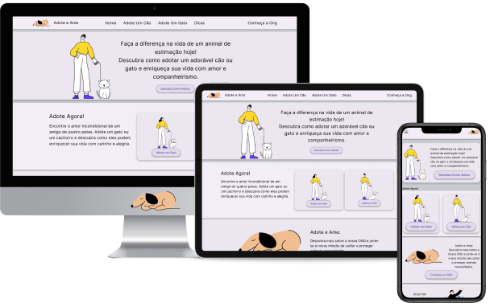
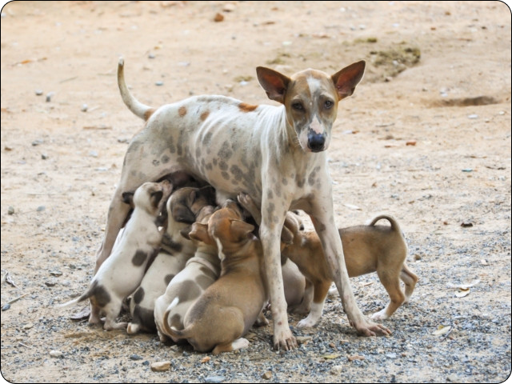

Motivação do Case:
Adote e Ame: O site que une corações peludos aos lares certos, promovendo o amor incondicional e as histórias de adoção mais emocionantes.
A ideia do Adote e Ame nasceu durante meu curso no Google UX Design Certificate. Com meus três animais adotado - um cãozinho e dois gatinhos -, entendi a verdadeira importância da adoção de pets.
É sobre resgatar e também sobre o amor que eles acrescentam às nossas vidas. Adote e Ame não é só um projeto; é uma missão para conscientizar sobre a adoção responsável.
Duração do projeto:
10/09/2023 - 18/09/2023
O Problema:
Enfrente o problema da superpopulação de animais de rua escolhendo adotar em vez de comprar. No site Adote e Ame, você pode encontrar seu novo amigo de quatro patas e contribuir para uma causa nobre.
O Objetivo:
Com apenas alguns cliques em nosso site, você pode resolver o problema da solidão de um animal de estimação em busca de um lar. Adote e Ame é a ponte que conecta corações peludos aos lares certos.

